Last updated: 2026-03-11
Scope: Classification dimensions only (no triggers or tools in the success model). Correlation sections add tools, triggers, and templates for context.
Data: Classified cohort (agents in agent_classifications.csv with success_segment from cohort). Success/failure/dormant definitions match the main agent success readout.
Value meanings: See semantic_layer/models/agent_classifications.md in the repo.
To copy into Word or Google Docs: open this file in a web browser, then Select All (Ctrl/Cmd+A) and Paste into your document.
Analytical approach. This readout analyzes how prompt-level classifications relate to agent success. We use the same cohort and success definitions as the main agent success readout: agents are assigned to success (used at least once after 7 days and still active), failure (inactive or deleted), or dormant (active but no use after 7 days). The prompts-only model uses only one-hot encoded classification dimensions (no trigger or template) to predict success vs non-success. We report Random Forest importance, SHAP direction, and logistic regression coefficients, plus per-dimension distributions and correlations with tools and other prompt categories.
Agent classifications. Classification logic was iterated and manually QAed on a small sample of prompts. After validation, the analysis was run on the full set of classified agents (~114K prompts). This readout covers 11 dimensions: functional archetype, execution dataset, domain knowledge depth, operational scope, data flow direction, autonomy level, tone and persona, domain industry vertical, external integration scope, use case context, and implied end date. (Team orientation, output modality, and state persistence are excluded from this readout.)
Distribution of agents (classified cohort).
| Segment | Count | Share | Success rate |
|---|---|---|---|
| dormant | 70,540 | 62.0% | 0.32 |
| success | 36,712 | 32.2% | 0.32 |
| failure | 6,611 | 5.8% | 0.32 |
Top prompt features for success and failure. The most important predictors from the prompts-only model are:
Toward success (positive): execution_dataset=collection_scoped (RF importance 0.174); functional_archetype=monitor (RF importance 0.090); execution_dataset=collection_unbounded (RF importance 0.047); data_flow_direction=outbound (RF importance 0.041); operational_scope=multi_workflow_orchestration (RF importance 0.034)
Toward failure (negative): functional_archetype=creator (RF importance 0.134); execution_dataset=single_user_prompt (RF importance 0.069); output_modality=visual_image (RF importance 0.036); domain_industry_vertical=creative_design (RF importance 0.035); execution_dataset=single_event_data (RF importance 0.031)
The chart below summarizes SHAP direction across all prompt features; green indicates higher success, red lower success. See the Prompts-only model summary section for the full RF importance table and significant logistic coefficients.
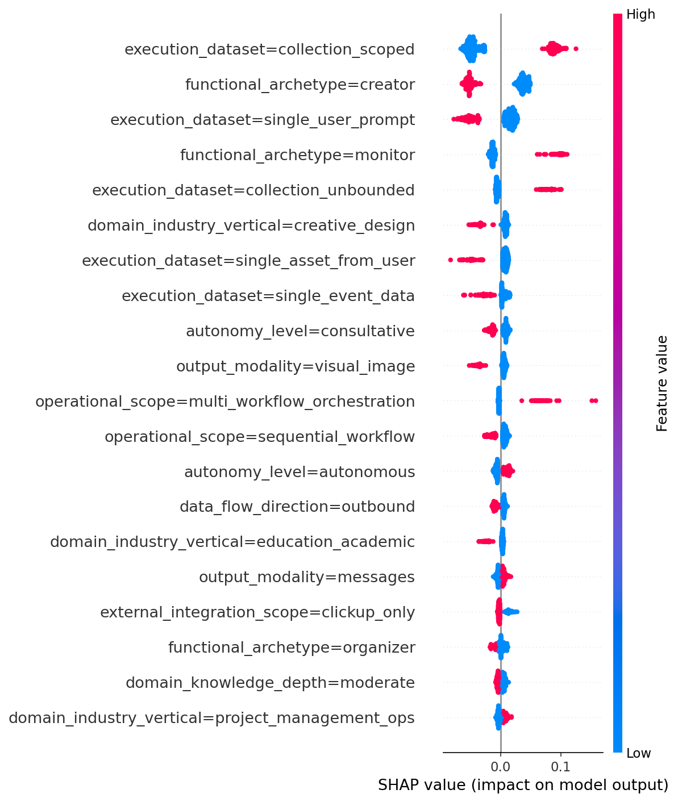
This section summarizes Random Forest importance, SHAP direction, and Logistic regression coefficients from the prompts-only model. Green = feature associated with higher success; Red = associated with lower success.
Commentary: The strongest positive predictors are execution_dataset=collection_scoped and functional_archetype=monitor. Strongest negative: functional_archetype=creator, execution_dataset=single_user_prompt, execution_dataset=single_asset_from_user. domain_knowledge_depth=light is positive; domain_knowledge_depth=moderate, domain_industry_vertical=creative_design, and education_academic are negative.
| Feature | Importance | Direction |
|---|---|---|
| execution_dataset=collection_scoped | 0.174 | positive |
| functional_archetype=creator | 0.134 | negative |
| functional_archetype=monitor | 0.090 | positive |
| execution_dataset=single_user_prompt | 0.069 | negative |
| execution_dataset=collection_unbounded | 0.047 | positive |
| data_flow_direction=outbound | 0.041 | positive |
| output_modality=visual_image | 0.036 | negative |
| domain_industry_vertical=creative_design | 0.035 | negative |
| operational_scope=multi_workflow_orchestration | 0.034 | positive |
| execution_dataset=single_event_data | 0.031 | negative |
| execution_dataset=single_asset_from_user | 0.027 | negative |
| domain_industry_vertical=project_management_ops | 0.027 | positive |
| autonomy_level=consultative | 0.023 | negative |
| domain_knowledge_depth=moderate | 0.022 | negative |
| data_flow_direction=processing | 0.018 | negative |
SHAP beeswarm (prompts-only)
Positive: execution_dataset=collection_scoped (0.346); execution_dataset=collection_unbounded (0.228); functional_archetype=monitor (0.218); operational_scope=multi_workflow_orchestration (0.155); domain_industry_vertical=marketing_content (0.138); domain_industry_vertical=personal_productivity (0.096); autonomy_level=autonomous (0.083); output_modality=messages (0.082); functional_archetype=communicator (0.079); domain_industry_vertical=project_management_ops (0.073); output_modality=task_artifact (0.072)
Negative: state_persistence=unknown (-0.054); execution_dataset=single_event_data (-0.068); autonomy_level=consultative (-0.092); operational_scope=sequential_workflow (-0.115); domain_industry_vertical=education_academic (-0.131); domain_industry_vertical=creative_design (-0.190); functional_archetype=creator (-0.200); output_modality=visual_image (-0.202); execution_dataset=single_asset_from_user (-0.258); execution_dataset=single_user_prompt (-0.273)
The agent's primary job function (creator, organizer, analyzer, communicator, monitor, enforcer).
| Value | What each value means | Dormant | Failure | Success | Success rate | Top 3 tools (pos; r) | Top 3 tools (neg; r) | Top 3 prompts (pos; r) | Top 3 prompts (neg; r) |
|---|---|---|---|---|---|---|---|---|---|
| analyzer | Produces insights, metrics, or recommendations from data. | 6,656 | 867 | 4,884 | 0.39 | — | — | output_modality=messages 0.16; domain_industry_vertical=finance_accounting 0.14; external_integration_scope=web_research_integration 0.11 | output_modality=visual_image -0.13; output_modality=task_artifact -0.13; domain_industry_vertical=creative_design -0.12 |
| communicator | Drafts and sends messages (emails, DMs, notifications). | 2,129 | 500 | 2,528 | 0.49 | — | — | output_modality=email_external_message 0.38; external_integration_scope=email_integration 0.30; data_flow_direction=bidirectional 0.15 | external_integration_scope=clickup_only -0.16; output_modality=task_artifact -0.10; output_modality=structured_document -0.09 |
| creator | Generates new content (writing, images, docs, code). | 38,672 | 734 | 5,307 | 0.12 | post_reply 0.33; generate_image 0.21 | todo_write -0.40; retrieve_tasks_by_filters -0.36; retrieve_activity -0.20 | data_flow_direction=outbound 0.65; domain_knowledge_depth=moderate 0.49; output_modality=visual_image 0.48 | data_flow_direction=processing -0.56; domain_industry_vertical=project_management_ops -0.50; domain_knowledge_depth=light -0.38 |
| enforcer | Enforces rules, compliance, or corrections. | 1,947 | 375 | 1,640 | 0.41 | — | — | data_flow_direction=processing 0.16; execution_dataset=single_event_data 0.14; domain_knowledge_depth=deep 0.14 | data_flow_direction=outbound -0.14; domain_knowledge_depth=moderate -0.11; autonomy_level=consultative -0.10 |
| monitor | Observes and reports; does not create or enforce. | 3,297 | 1,750 | 10,049 | 0.67 | retrieve_tasks_by_filters 0.36; todo_write 0.33; post_chat_message 0.33 | post_reply -0.27 | output_modality=messages 0.32; domain_industry_vertical=project_management_ops 0.31; data_flow_direction=processing 0.29 | domain_knowledge_depth=moderate -0.28; data_flow_direction=outbound -0.26; execution_dataset=single_user_prompt -0.23 |
| organizer | Structures, routes, or categorizes existing work items. | 17,770 | 2,373 | 12,265 | 0.38 | update_task 0.20 | — | output_modality=task_artifact 0.48; data_flow_direction=processing 0.34; domain_industry_vertical=project_management_ops 0.25 | data_flow_direction=outbound -0.44; output_modality=visual_image -0.25; domain_knowledge_depth=moderate -0.23 |
| unknown | Could not be determined. | 69 | 12 | 39 | 0.32 | — | — | data_flow_direction=unknown 0.79; operational_scope=unknown 0.76; autonomy_level=unknown 0.58 | team_orientation=individual -0.13; implied_end_date=false -0.08; external_integration_scope=clickup_only -0.06 |
Bar chart (agent count and success rate by value)
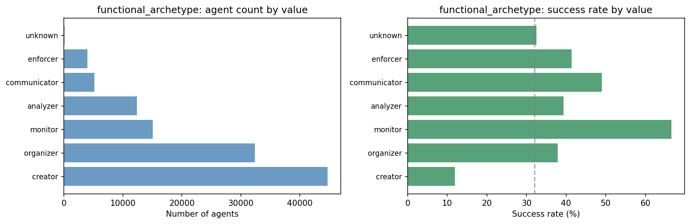
Inference * Creator is the most common but has the lowest success rate (12%). Monitor has the highest success rate (67%). Organizer and analyzer are common with moderate success (~0.38–0.39).
Direction (success vs fail)
Correlation with tools, triggers, templates
See table above for top tools and other prompt categories (|r| ≥ 0.05). Monitor correlates with scheduled trigger and task/todo tools; creator with post_reply and introduction.
Other insights
Creator-heavy prompts dominate but underperform; monitor and communicator are strong success levers. Product could favor monitor/communicator patterns where appropriate.
Footnotes: Correlations are agent-level Pearson (|r| ≥ 0.05); primary trigger/template and avg tool usage per run. Correlation color code: Green = positive correlation with this dimension value; Red = negative correlation.
What the agent works on per invocation (single event, user prompt, asset, collection_scoped, collection_unbounded, messages).
| Value | What each value means | Dormant | Failure | Success | Success rate | Top 3 tools (pos; r) | Top 3 tools (neg; r) | Top 3 prompts (pos; r) | Top 3 prompts (neg; r) |
|---|---|---|---|---|---|---|---|---|---|
| collection_scoped | Queries a defined scope (lists, time windows). | 11,213 | 3,125 | 18,728 | 0.57 | retrieve_tasks_by_filters 0.38; todo_write 0.37; read_memory 0.22 | post_reply -0.27 | functional_archetype=monitor 0.28; data_flow_direction=processing 0.27; operational_scope=multi_workflow_orchestration 0.23 | functional_archetype=creator -0.37; data_flow_direction=outbound -0.32; output_modality=visual_image -0.22 |
| collection_unbounded | Searches broadly with no predetermined boundary. | 3,458 | 1,134 | 6,593 | 0.59 | todo_write 0.24; retrieve_tasks_by_filters 0.21 | — | functional_archetype=monitor 0.28; domain_knowledge_depth=none 0.22; domain_industry_vertical=project_management_ops 0.21 | functional_archetype=creator -0.21; domain_knowledge_depth=moderate -0.18; data_flow_direction=outbound -0.15 |
| single_asset_from_user | User provides material; agent parses/transforms it. | 10,795 | 194 | 999 | 0.08 | — | todo_write -0.20 | domain_industry_vertical=education_academic 0.23; functional_archetype=creator 0.23; operational_scope=sequential_workflow 0.22 | operational_scope=branching_workflow -0.15; domain_industry_vertical=project_management_ops -0.15; data_flow_direction=processing -0.13 |
| single_event_data | Triggered by one ClickUp automation event. | 19,695 | 1,529 | 7,100 | 0.25 | — | retrieve_tasks_by_filters -0.18 | output_modality=task_artifact 0.16; data_flow_direction=processing 0.15; functional_archetype=organizer 0.15 | functional_archetype=monitor -0.16; data_flow_direction=outbound -0.12; autonomy_level=consultative -0.11 |
| single_user_prompt | User sends a request; agent creates in response. | 25,106 | 594 | 3,061 | 0.11 | post_reply 0.28 | todo_write -0.33; retrieve_tasks_by_filters -0.26; load_assets -0.18 | data_flow_direction=outbound 0.44; functional_archetype=creator 0.43; autonomy_level=consultative 0.35 | data_flow_direction=processing -0.41; domain_industry_vertical=project_management_ops -0.30; domain_knowledge_depth=light -0.23 |
| unknown | Could not be determined. | 273 | 35 | 231 | 0.43 | — | — | operational_scope=unknown 0.57; data_flow_direction=unknown 0.56; autonomy_level=unknown 0.54 | team_orientation=individual -0.15; operational_scope=branching_workflow -0.07; external_integration_scope=clickup_only -0.06 |
Bar chart (agent count and success rate by value)
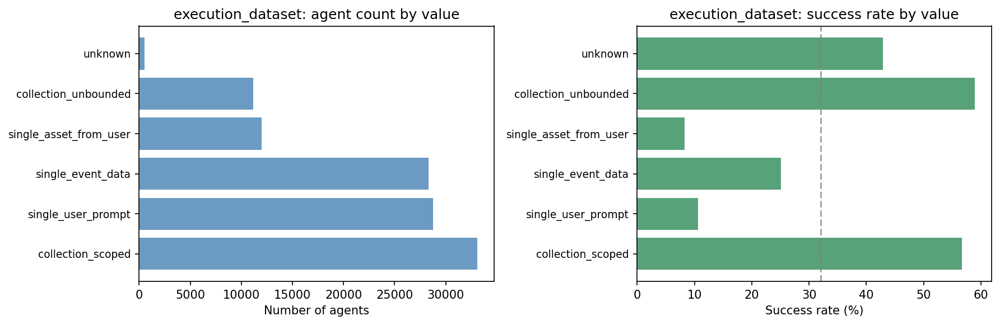
Inference * single_user_prompt and single_asset_from_user have very low success rates (0.11 and 0.08). collection_scoped and collection_unbounded have the highest (0.57 and 0.59). Collection-based execution is strongly associated with success.
Direction (success vs fail)
Correlation with tools, triggers, templates
See table above. collection_scoped correlates with scheduled and task/retrieval tools; single_user_prompt with introduction.
Other insights
Execution dataset is one of the strongest predictors. Shifting prompts toward collection-scoped or unbounded semantics and away from single-user-prompt/asset may improve success.
Footnotes: Correlations are agent-level Pearson (|r| ≥ 0.05); primary trigger/template and avg tool usage per run. Correlation color code: Green = positive correlation with this dimension value; Red = negative correlation.
How much specialized field expertise is baked into the prompt (generic vs craft knowledge vs formal processes).
| Value | What each value means | Dormant | Failure | Success | Success rate | Top 3 tools (pos; r) | Top 3 tools (neg; r) | Top 3 prompts (pos; r) | Top 3 prompts (neg; r) |
|---|---|---|---|---|---|---|---|---|---|
| deep | Formal procedural knowledge; lifecycle, compliance. | 5,120 | 449 | 3,084 | 0.36 | — | — | domain_industry_vertical=legal_compliance 0.32; use_case_context=specific_use_case 0.21; functional_archetype=enforcer 0.14 | use_case_context=general_productivity -0.19; tone_and_persona=casual_friendly -0.14; domain_industry_vertical=creative_design -0.10 |
| light | Domain is the setting, not the skill. | 18,570 | 3,444 | 16,673 | 0.43 | todo_write 0.21; retrieve_tasks_by_filters 0.19; retrieve_activity 0.16 | post_reply -0.17 | domain_industry_vertical=project_management_ops 0.50; use_case_context=general_productivity 0.38; data_flow_direction=processing 0.32 | functional_archetype=creator -0.38; data_flow_direction=outbound -0.36; use_case_context=specific_use_case -0.25 |
| moderate | Domain craft knowledge essential; techniques, frameworks. | 41,878 | 1,830 | 12,405 | 0.22 | post_reply 0.22 | todo_write -0.25; retrieve_tasks_by_filters -0.24; retrieve_activity -0.17 | functional_archetype=creator 0.49; data_flow_direction=outbound 0.45; domain_industry_vertical=marketing_content 0.29 | domain_industry_vertical=project_management_ops -0.54; use_case_context=general_productivity -0.44; data_flow_direction=processing -0.41 |
| none | Generic instructions only; no domain references. | 4,962 | 885 | 4,544 | 0.44 | retrieve_personal_priorities 0.20; retrieve_tasks_by_filters 0.13; post_chat_message 0.12 | — | use_case_context=general_productivity 0.32; execution_dataset=collection_unbounded 0.22; domain_industry_vertical=project_management_ops 0.20 | use_case_context=specific_use_case -0.27; functional_archetype=creator -0.16; data_flow_direction=outbound -0.15 |
| unknown | Could not be determined. | 10 | 3 | 6 | 0.32 | — | — | domain_industry_vertical=unknown 0.77; functional_archetype=unknown 0.40; data_flow_direction=unknown 0.31 | implied_end_date=false -0.06; team_orientation=individual -0.06 |
Bar chart (agent count and success rate by value)
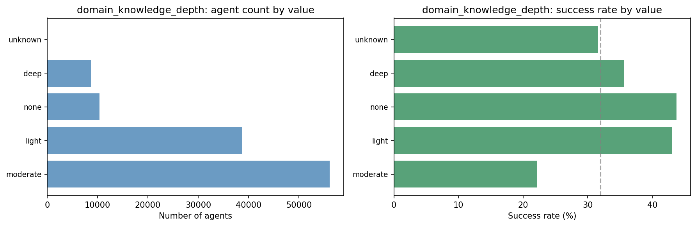
Inference * Moderate is the most common but has the lowest success rate (22%). Light and none have the highest success rates (~43–44%). Deeper domain depth in the prompt is associated with lower success in raw counts.
Direction (success vs fail)
Correlation with tools, triggers, templates
See table above. Moderate may correlate with trigger=introduction or creator-heavy tools; light/none with scheduled and task-retrieval tools.
Other insights
Agents with moderate domain depth dominate the cohort but underperform; simplifying or clarifying prompts (e.g. toward light) may be worth testing.
Footnotes: Correlations are agent-level Pearson (|r| ≥ 0.05); primary trigger/template and avg tool usage per run. Correlation color code: Green = positive correlation with this dimension value; Red = negative correlation.
How complex the agent's workflow is per run (one action vs linear pipeline vs branching vs multiple workflows).
| Value | What each value means | Dormant | Failure | Success | Success rate | Top 3 tools (pos; r) | Top 3 tools (neg; r) | Top 3 prompts (pos; r) | Top 3 prompts (neg; r) |
|---|---|---|---|---|---|---|---|---|---|
| branching_workflow | Core logic diverges by input or business rules. | 42,705 | 4,002 | 23,223 | 0.33 | — | — | execution_dataset=single_event_data 0.13; tone_and_persona=casual_friendly 0.09; data_flow_direction=processing 0.09 | execution_dataset=single_asset_from_user -0.15; output_modality=structured_document -0.11; tone_and_persona=unknown -0.08 |
| multi_workflow_orchestration | Two or more independent sub-workflows. | 3,503 | 820 | 6,095 | 0.59 | todo_write 0.16; retrieve_tasks_by_filters 0.15; read_memory 0.15 | post_reply -0.14 | execution_dataset=collection_scoped 0.23; data_flow_direction=bidirectional 0.19; functional_archetype=organizer 0.17 | functional_archetype=creator -0.15; state_persistence=unknown -0.13; external_integration_scope=clickup_only -0.13 |
| sequential_workflow | Multi-step linear pipeline; guard clauses only. | 23,841 | 1,742 | 7,228 | 0.22 | post_reply 0.13; create_document 0.06 | retrieve_tasks_by_filters -0.10; todo_write -0.10; post_chat_message -0.08 | execution_dataset=single_asset_from_user 0.22; functional_archetype=creator 0.16; data_flow_direction=outbound 0.14 | execution_dataset=collection_scoped -0.12; autonomy_level=human_in_the_loop -0.12; data_flow_direction=processing -0.10 |
| single_action | One discrete action per invocation. | 377 | 30 | 97 | 0.19 | — | — | implied_end_date=unknown 0.19; autonomy_level=unknown 0.18; tone_and_persona=unknown 0.17 | implied_end_date=false -0.09 |
| unknown | Could not be determined. | 114 | 17 | 69 | 0.34 | — | — | data_flow_direction=unknown 0.93; functional_archetype=unknown 0.76; autonomy_level=unknown 0.74 | team_orientation=individual -0.16; implied_end_date=false -0.08; external_integration_scope=clickup_only -0.07 |
Bar chart (agent count and success rate by value)
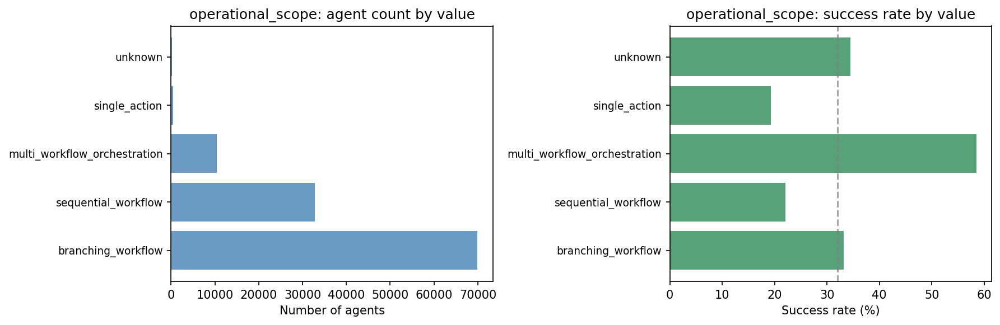
Inference * Multi_workflow_orchestration has the highest success rate (59%) and is a minority; branching is most common with moderate success rate (33%); sequential has the lowest success rate (22%).
Direction (success vs fail)
Correlation with tools, triggers, templates
See table above. Multi-workflow orchestration correlates with scheduled trigger and task/todo tools; sequential_workflow correlates negatively with those.
Other insights
Orchestration and branching are directionally more successful; simplifying to "sequential" in the prompt may be associated with lower success.
Footnotes: Correlations are agent-level Pearson (|r| ≥ 0.05); primary trigger/template and avg tool usage per run. Correlation color code: Green = positive correlation with this dimension value; Red = negative correlation.
Where data moves relative to ClickUp (inbound, processing, outbound, or bidirectional).
| Value | What each value means | Dormant | Failure | Success | Success rate | Top 3 tools (pos; r) | Top 3 tools (neg; r) | Top 3 prompts (pos; r) | Top 3 prompts (neg; r) |
|---|---|---|---|---|---|---|---|---|---|
| bidirectional | Requires both importing and exporting. | 3,409 | 723 | 3,957 | 0.49 | search_google_calendar 0.23; view_tools_catalog 0.21 | — | external_integration_scope=email_integration 0.39; external_integration_scope=multiple_external_systems 0.35; output_modality=email_external_message 0.30 | external_integration_scope=clickup_only -0.52; functional_archetype=creator -0.15; output_modality=visual_image -0.10 |
| inbound | Captures external data into ClickUp. | 212 | 45 | 129 | 0.33 | — | — | output_modality=task_artifact 0.11; functional_archetype=organizer 0.09; domain_knowledge_depth=light 0.05 | — |
| outbound | Output leaves ClickUp or is new content. | 38,376 | 1,349 | 8,455 | 0.18 | post_reply 0.27; generate_image 0.18 | todo_write -0.35; retrieve_tasks_by_filters -0.30; load_assets -0.20 | functional_archetype=creator 0.65; domain_knowledge_depth=moderate 0.45; execution_dataset=single_user_prompt 0.44 | domain_industry_vertical=project_management_ops -0.46; functional_archetype=organizer -0.44; domain_knowledge_depth=light -0.36 |
| processing | Restructures ClickUp data; output stays in ClickUp. | 28,432 | 4,476 | 24,108 | 0.42 | todo_write 0.29; retrieve_tasks_by_filters 0.28; load_assets 0.19 | post_reply -0.24; generate_image -0.15 | domain_industry_vertical=project_management_ops 0.45; functional_archetype=organizer 0.34; domain_knowledge_depth=light 0.32 | functional_archetype=creator -0.56; execution_dataset=single_user_prompt -0.41; domain_knowledge_depth=moderate -0.41 |
| unknown | Could not be determined. | 111 | 18 | 63 | 0.33 | — | — | operational_scope=unknown 0.93; functional_archetype=unknown 0.79; autonomy_level=unknown 0.72 | team_orientation=individual -0.16; implied_end_date=false -0.08; external_integration_scope=clickup_only -0.07 |
Bar chart (agent count and success rate by value)
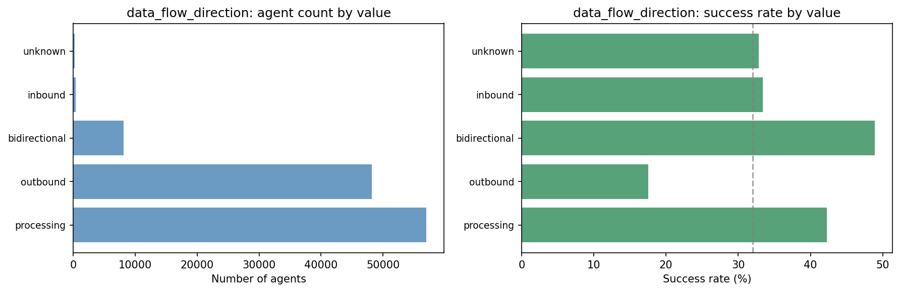
Inference * Outbound is most common but has the lowest success rate (18%). Processing and bidirectional have higher success rates (0.42 and 0.49). Outbound-heavy prompts are associated with lower success in the population.
Direction (success vs fail)
Correlation with tools, triggers, templates
See table above.
Other insights
Outbound-dominant prompts are numerous but underperform; balancing with processing or bidirectional semantics may be worth exploring.
Footnotes: Correlations are agent-level Pearson (|r| ≥ 0.05); primary trigger/template and avg tool usage per run. Correlation color code: Green = positive correlation with this dimension value; Red = negative correlation.
Whether the agent asks before acting, acts then reports, or acts silently (consultative, human_in_the_loop, autonomous, enforcer, monitor).
| Value | What each value means | Dormant | Failure | Success | Success rate | Top 3 tools (pos; r) | Top 3 tools (neg; r) | Top 3 prompts (pos; r) | Top 3 prompts (neg; r) |
|---|---|---|---|---|---|---|---|---|---|
| autonomous | Acts without asking; handles edge cases via rules. | 25,952 | 3,818 | 20,242 | 0.40 | todo_write 0.21; retrieve_tasks_by_filters 0.17; retrieve_activity 0.14 | post_reply -0.18 | functional_archetype=monitor 0.28; data_flow_direction=processing 0.18; domain_industry_vertical=project_management_ops 0.15 | execution_dataset=single_user_prompt -0.22; functional_archetype=creator -0.17; domain_knowledge_depth=moderate -0.16 |
| consultative | Asks user before acting; human gates the action. | 34,320 | 1,466 | 9,130 | 0.20 | post_reply 0.24 | todo_write -0.28; retrieve_tasks_by_filters -0.20; load_assets -0.14 | execution_dataset=single_user_prompt 0.35; data_flow_direction=outbound 0.30; functional_archetype=creator 0.29 | data_flow_direction=processing -0.28; functional_archetype=monitor -0.22; domain_industry_vertical=project_management_ops -0.21 |
| human_in_the_loop | Acts first, then reports for human review. | 10,070 | 1,294 | 7,222 | 0.39 | load_assets 0.10 | — | functional_archetype=organizer 0.23; operational_scope=multi_workflow_orchestration 0.16; output_modality=task_artifact 0.14 | data_flow_direction=outbound -0.18; execution_dataset=single_user_prompt -0.16; functional_archetype=creator -0.15 |
| unknown | Could not be determined. | 198 | 33 | 118 | 0.34 | — | — | operational_scope=unknown 0.74; data_flow_direction=unknown 0.72; functional_archetype=unknown 0.58 | team_orientation=individual -0.19; implied_end_date=false -0.10; operational_scope=branching_workflow -0.07 |
Bar chart (agent count and success rate by value)
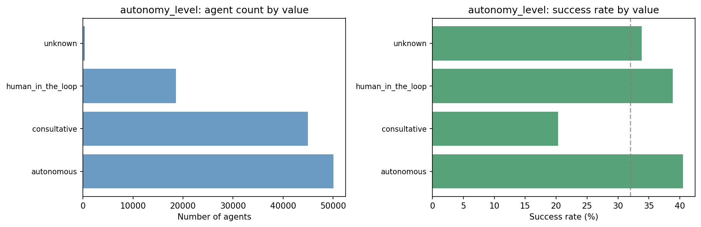
Inference * Consultative is most common but has the lowest success rate (20%). Autonomous and human_in_the_loop have higher success rates (~0.39–0.40). More autonomous prompts associate with higher success.
Direction (success vs fail)
Correlation with tools, triggers, templates
See table above. Consultative correlates with introduction or low automation; autonomous with scheduled and task/memory tools.
Other insights
Consultative framing may reduce success; encouraging clearer autonomous or human-in-the-loop patterns in prompts could help.
Footnotes: Correlations are agent-level Pearson (|r| ≥ 0.05); primary trigger/template and avg tool usage per run. Correlation color code: Green = positive correlation with this dimension value; Red = negative correlation.
Communication style (professional_formal, casual_friendly, technical_precise, empathetic_supportive).
| Value | What each value means | Dormant | Failure | Success | Success rate | Top 3 tools (pos; r) | Top 3 tools (neg; r) | Top 3 prompts (pos; r) | Top 3 prompts (neg; r) |
|---|---|---|---|---|---|---|---|---|---|
| casual_friendly | Warm, conversational, approachable. | 25,901 | 1,311 | 9,438 | 0.26 | post_reply 0.10; edit_image 0.09 | todo_write -0.13; load_assets -0.12; load_custom_fields -0.08 | domain_industry_vertical=creative_design 0.24; output_modality=visual_image 0.22; functional_archetype=creator 0.20 | data_flow_direction=processing -0.15; domain_knowledge_depth=deep -0.14; domain_industry_vertical=project_management_ops -0.14 |
| empathetic_supportive | Encouraging, coaching, patient. | 8,340 | 448 | 3,366 | 0.28 | — | — | use_case_context=personal_use_case 0.35; domain_industry_vertical=education_academic 0.33; domain_industry_vertical=personal_productivity 0.16 | domain_industry_vertical=project_management_ops -0.17; use_case_context=general_productivity -0.14; use_case_context=specific_use_case -0.14 |
| professional_formal | Concise, structured, executive-ready. | 30,774 | 4,108 | 20,853 | 0.37 | todo_write 0.14; load_assets 0.12; retrieve_tasks_by_filters 0.09 | post_reply -0.10; generate_image -0.07 | domain_industry_vertical=project_management_ops 0.25; data_flow_direction=processing 0.20; use_case_context=specific_use_case 0.16 | functional_archetype=creator -0.24; use_case_context=personal_use_case -0.23; data_flow_direction=outbound -0.23 |
| technical_precise | Data-driven, rigorous, systematic. | 4,681 | 560 | 2,427 | 0.32 | — | — | domain_industry_vertical=it_engineering 0.23; functional_archetype=analyzer 0.10; domain_knowledge_depth=deep 0.08 | operational_scope=branching_workflow -0.06; domain_knowledge_depth=none -0.05; domain_industry_vertical=education_academic -0.05 |
| unknown | Could not be determined. | 844 | 184 | 628 | 0.38 | — | — | autonomy_level=unknown 0.18; operational_scope=single_action 0.17; team_orientation=unknown 0.16 | operational_scope=branching_workflow -0.08; implied_end_date=false -0.08; team_orientation=individual -0.06 |
Bar chart (agent count and success rate by value)
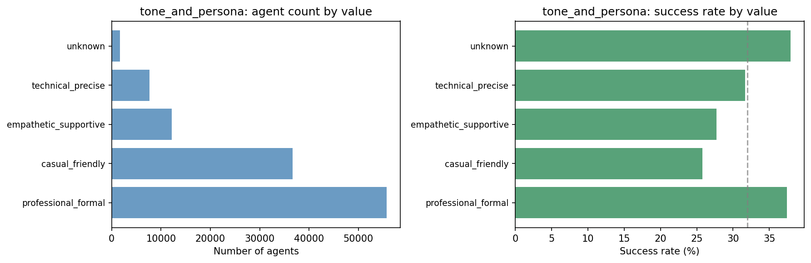
Inference * Professional_formal and casual_friendly dominate. Professional_formal has the highest success rate among the main categories (0.37); casual_friendly and empathetic_supportive are lower (~0.26–0.28).
Direction (success vs fail)
Correlation with tools, triggers, templates
See table above.
Other insights
Tone is a weaker driver than archetype or scope; formal tone is slightly associated with higher success.
Footnotes: Correlations are agent-level Pearson (|r| ≥ 0.05); primary trigger/template and avg tool usage per run. Correlation color code: Green = positive correlation with this dimension value; Red = negative correlation.
Which industry or functional area the agent serves (PM, sales, marketing, HR, legal, finance, education, personal, creative, engineering, general).
| Value | What each value means | Dormant | Failure | Success | Success rate | Top 3 tools (pos; r) | Top 3 tools (neg; r) | Top 3 prompts (pos; r) | Top 3 prompts (neg; r) |
|---|---|---|---|---|---|---|---|---|---|
| creative_design | Graphic design, UI/UX, image generation, video. | 15,044 | 182 | 1,034 | 0.06 | edit_image 0.26; generate_image 0.21; post_reply 0.18 | todo_write -0.26; retrieve_tasks_by_filters -0.19; load_assets -0.15 | output_modality=visual_image 0.65; functional_archetype=creator 0.45; data_flow_direction=outbound 0.39 | data_flow_direction=processing -0.33; output_modality=messages -0.27; functional_archetype=organizer -0.22 |
| education_academic | Teaching, tutoring, coursework, exam prep. | 10,670 | 151 | 1,625 | 0.13 | — | todo_write -0.15; retrieve_tasks_by_filters -0.12 | use_case_context=personal_use_case 0.64; tone_and_persona=empathetic_supportive 0.33; functional_archetype=creator 0.27 | use_case_context=general_productivity -0.23; tone_and_persona=professional_formal -0.18; use_case_context=specific_use_case -0.18 |
| finance_accounting | Budgeting, invoicing, financial reporting. | 1,991 | 215 | 1,587 | 0.42 | — | — | functional_archetype=analyzer 0.14; use_case_context=specific_use_case 0.13; domain_knowledge_depth=deep 0.13 | use_case_context=general_productivity -0.13; functional_archetype=creator -0.09; domain_knowledge_depth=light -0.08 |
| general_cross_functional | General-purpose or no specific vertical. | 5,712 | 308 | 1,996 | 0.25 | — | — | external_integration_scope=web_research_integration 0.12; functional_archetype=communicator 0.11; functional_archetype=analyzer 0.10 | external_integration_scope=clickup_only -0.11; domain_knowledge_depth=light -0.08; data_flow_direction=processing -0.06 |
| hr_people | Hiring, recruiting, onboarding, performance. | 1,210 | 140 | 764 | 0.36 | — | — | use_case_context=specific_use_case 0.09; domain_knowledge_depth=deep 0.05 | use_case_context=general_productivity -0.09 |
| it_engineering | Software dev, coding, debugging, DevOps. | 3,065 | 208 | 1,135 | 0.26 | — | — | tone_and_persona=technical_precise 0.23; domain_knowledge_depth=moderate 0.09; output_modality=unknown 0.05 | domain_knowledge_depth=light -0.07; domain_knowledge_depth=none -0.06; tone_and_persona=professional_formal -0.05 |
| legal_compliance | Legal, contracts, compliance, regulatory. | 1,601 | 116 | 847 | 0.33 | — | — | domain_knowledge_depth=deep 0.32; use_case_context=specific_use_case 0.14; tone_and_persona=professional_formal 0.10 | use_case_context=general_productivity -0.11; tone_and_persona=casual_friendly -0.09; domain_knowledge_depth=light -0.09 |
| marketing_content | Content, social, SEO, campaigns, branding. | 9,869 | 673 | 4,695 | 0.31 | — | — | use_case_context=specific_use_case 0.30; domain_knowledge_depth=moderate 0.29; functional_archetype=creator 0.22 | use_case_context=general_productivity -0.23; domain_knowledge_depth=light -0.21; data_flow_direction=processing -0.18 |
| personal_productivity | Personal planning, habits, journaling. | 2,059 | 464 | 3,008 | 0.54 | retrieve_personal_priorities 0.22; search_google_calendar 0.18 | — | use_case_context=personal_productivity 0.38; external_integration_scope=calendar_integration 0.19; domain_knowledge_depth=none 0.16 | use_case_context=specific_use_case -0.19; functional_archetype=creator -0.14; tone_and_persona=professional_formal -0.13 |
| project_management_ops | Projects, sprints, standups, deadlines. | 17,324 | 3,799 | 18,164 | 0.46 | todo_write 0.28; retrieve_tasks_by_filters 0.26; retrieve_activity 0.21 | post_reply -0.23; generate_image -0.12 | use_case_context=general_productivity 0.51; domain_knowledge_depth=light 0.50; data_flow_direction=processing 0.45 | domain_knowledge_depth=moderate -0.54; functional_archetype=creator -0.50; data_flow_direction=outbound -0.46 |
| sales_crm | Deals, pipeline, leads, CRM, revenue. | 1,980 | 348 | 1,847 | 0.44 | — | — | use_case_context=specific_use_case 0.21; data_flow_direction=bidirectional 0.08; functional_archetype=organizer 0.08 | use_case_context=general_productivity -0.15; functional_archetype=creator -0.12; data_flow_direction=outbound -0.07 |
| unknown | Could not be determined. | 15 | 7 | 10 | 0.31 | — | — | domain_knowledge_depth=unknown 0.77; functional_archetype=unknown 0.50; data_flow_direction=unknown 0.41 | team_orientation=individual -0.08; implied_end_date=false -0.07 |
Bar chart (agent count and success rate by value)
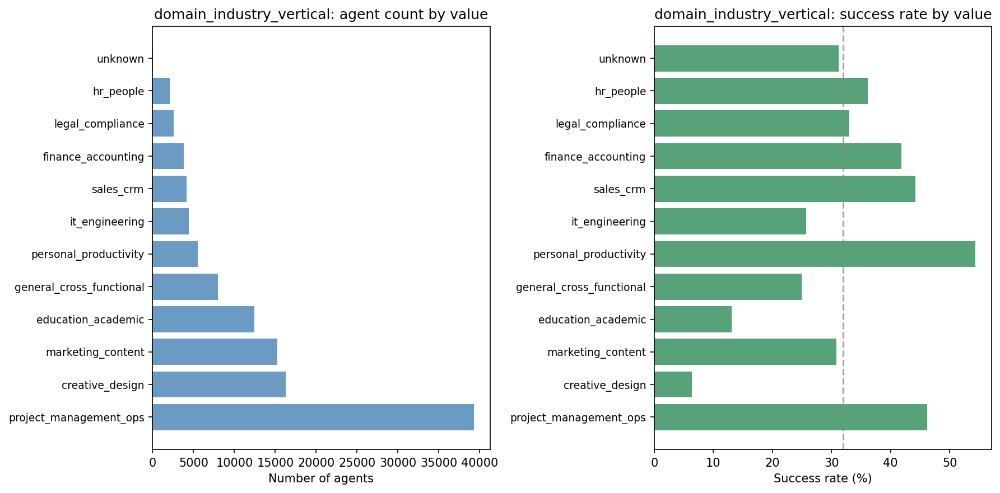
Inference * creative_design and education_academic have very low success rates (0.06 and 0.13); personal_productivity and project_management_ops are higher (0.54 and 0.46). Vertical strongly differentiates success.
Direction (success vs fail)
Correlation with tools, triggers, templates
See table above. Vertical correlates with tool mix (e.g. creative with generate_image, PM with task tools).
Other insights
Creative and education verticals underperform; PM, sales, finance, personal productivity align with success. Vertical-specific onboarding could emphasize successful verticals.
Footnotes: Correlations are agent-level Pearson (|r| ≥ 0.05); primary trigger/template and avg tool usage per run. Correlation color code: Green = positive correlation with this dimension value; Red = negative correlation.
Extent of integration with systems outside ClickUp (clickup_only, email, calendar, web_research, multiple_external_systems).
| Value | What each value means | Dormant | Failure | Success | Success rate | Top 3 tools (pos; r) | Top 3 tools (neg; r) | Top 3 prompts (pos; r) | Top 3 prompts (neg; r) |
|---|---|---|---|---|---|---|---|---|---|
| calendar_integration | Integrates with calendar. | 921 | 280 | 1,192 | 0.50 | search_google_calendar 0.46; create_google_calendar_event 0.27; check_calendar_availability 0.17 | — | data_flow_direction=bidirectional 0.26; domain_industry_vertical=personal_productivity 0.19; functional_archetype=organizer 0.13 | functional_archetype=creator -0.11; domain_knowledge_depth=moderate -0.10; data_flow_direction=outbound -0.08 |
| clickup_only | No external integrations; ClickUp only. | 59,726 | 5,186 | 28,713 | 0.31 | — | search_public_web -0.31; load_web_pages -0.28; search_google_calendar -0.23 | data_flow_direction=processing 0.31; output_modality=visual_image 0.14; domain_industry_vertical=creative_design 0.13 | data_flow_direction=bidirectional -0.52; output_modality=email_external_message -0.26; functional_archetype=communicator -0.16 |
| email_integration | Integrates with email. | 1,044 | 326 | 1,468 | 0.52 | gmail_create_draft 0.22; view_tools_catalog 0.21 | — | output_modality=email_external_message 0.60; data_flow_direction=bidirectional 0.39; functional_archetype=communicator 0.30 | data_flow_direction=processing -0.13; functional_archetype=creator -0.11; data_flow_direction=outbound -0.07 |
| multiple_external_systems | Multiple external systems. | 1,348 | 285 | 1,541 | 0.49 | search_google_calendar 0.22 | — | data_flow_direction=bidirectional 0.35; operational_scope=multi_workflow_orchestration 0.17; domain_industry_vertical=personal_productivity 0.14 | data_flow_direction=processing -0.14; functional_archetype=creator -0.07; output_modality=visual_image -0.06 |
| unknown | Could not be determined. | 352 | 133 | 527 | 0.52 | post_slack_message 0.30 | — | operational_scope=unknown 0.37; data_flow_direction=unknown 0.37; autonomy_level=unknown 0.33 | team_orientation=individual -0.14 |
| web_research_integration | Uses web/search or research tools. | 7,149 | 401 | 3,271 | 0.30 | search_public_web 0.38; load_web_pages 0.35 | retrieve_tasks_by_filters -0.11 | domain_knowledge_depth=moderate 0.16; data_flow_direction=outbound 0.15; execution_dataset=single_user_prompt 0.14 | data_flow_direction=processing -0.21; domain_industry_vertical=project_management_ops -0.19; use_case_context=general_productivity -0.17 |
Bar chart (agent count and success rate by value)
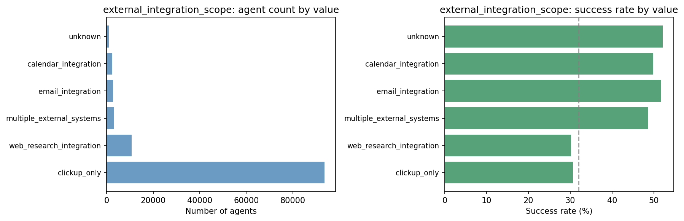
Inference * clickup_only dominates but has the lowest success rate (0.31). Email, calendar, and multiple_external_systems have higher success rates (0.49–0.52). External integration in the prompt associates with higher success.
Direction (success vs fail)
Correlation with tools, triggers, templates
See table above. Calendar/email scope correlates with calendar/email tools and possibly scheduled trigger.
Other insights
Prompts that imply external integrations (email, calendar, multiple systems) associate with higher success than clickup_only.
Footnotes: Correlations are agent-level Pearson (|r| ≥ 0.05); primary trigger/template and avg tool usage per run. Correlation color code: Green = positive correlation with this dimension value; Red = negative correlation.
High-level context of how the agent is used (specific workflow, general productivity, personal, entertainment, test_or_placeholder).
| Value | What each value means | Dormant | Failure | Success | Success rate | Top 3 tools (pos; r) | Top 3 tools (neg; r) | Top 3 prompts (pos; r) | Top 3 prompts (neg; r) |
|---|---|---|---|---|---|---|---|---|---|
| entertainment | Entertainment or non-work. | 404 | 15 | 79 | 0.16 | — | — | domain_industry_vertical=creative_design 0.08; data_flow_direction=outbound 0.07; tone_and_persona=casual_friendly 0.06 | data_flow_direction=processing -0.06; tone_and_persona=professional_formal -0.05 |
| general_productivity | General productivity assistance. | 24,106 | 3,445 | 16,502 | 0.37 | retrieve_activity 0.15; retrieve_tasks_by_filters 0.14; retrieve_personal_priorities 0.13 | post_reply -0.11; search_public_web -0.10 | domain_industry_vertical=project_management_ops 0.51; domain_knowledge_depth=light 0.38; domain_knowledge_depth=none 0.32 | domain_knowledge_depth=moderate -0.44; domain_industry_vertical=education_academic -0.23; domain_industry_vertical=marketing_content -0.23 |
| personal_productivity | Personal productivity. | 3,327 | 209 | 1,792 | 0.34 | — | — | domain_industry_vertical=personal_productivity 0.38; tone_and_persona=casual_friendly 0.11; domain_industry_vertical=creative_design 0.09 | tone_and_persona=professional_formal -0.15; domain_industry_vertical=project_management_ops -0.14; domain_industry_vertical=education_academic -0.07 |
| personal_use_case | Personal use (e.g. study, habits). | 12,134 | 232 | 2,932 | 0.19 | post_reply 0.12 | todo_write -0.12; retrieve_tasks_by_filters -0.10; retrieve_activity -0.09 | domain_industry_vertical=education_academic 0.64; tone_and_persona=empathetic_supportive 0.35; functional_archetype=creator 0.22 | domain_industry_vertical=project_management_ops -0.27; tone_and_persona=professional_formal -0.23; domain_knowledge_depth=light -0.16 |
| specific_use_case | Tied to a specific workflow or business use case. | 30,524 | 2,703 | 15,386 | 0.32 | load_assets 0.10; load_custom_fields 0.10 | retrieve_personal_priorities -0.12; post_chat_message -0.10 | domain_industry_vertical=marketing_content 0.30; domain_knowledge_depth=moderate 0.28; domain_knowledge_depth=deep 0.21 | domain_knowledge_depth=none -0.27; domain_knowledge_depth=light -0.25; domain_industry_vertical=project_management_ops -0.25 |
| test_or_placeholder | Test or placeholder agent. | 33 | 2 | 19 | 0.35 | — | — | implied_end_date=unknown 0.38; domain_industry_vertical=unknown 0.24; domain_knowledge_depth=unknown 0.22 | implied_end_date=false -0.08 |
| unknown | Could not be determined. | 12 | 5 | 2 | 0.11 | — | — | domain_industry_vertical=unknown 0.41; implied_end_date=unknown 0.32; functional_archetype=unknown 0.31 | implied_end_date=false -0.06; team_orientation=individual -0.05 |
Bar chart (agent count and success rate by value)
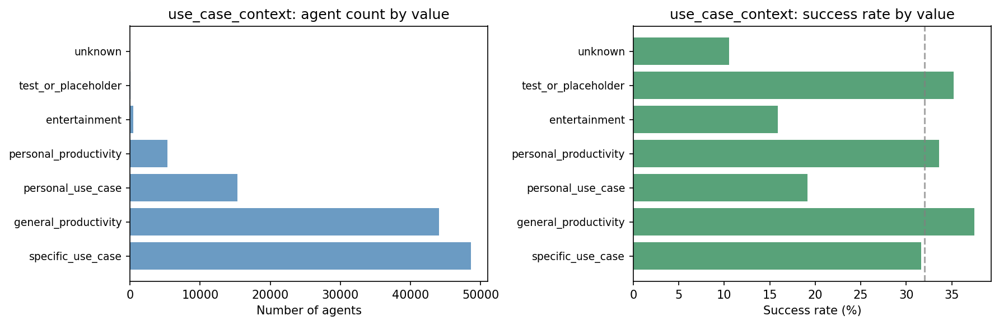
Inference * general_productivity has the highest success rate among main categories (0.37); personal_use_case and entertainment are low (0.19 and 0.16). Specific and general productivity contexts perform moderately.
Direction (success vs fail)
Correlation with tools, triggers, templates
See table above.
Other insights
Use case context is a weaker driver; general productivity in the population aligns with higher success despite negative coefficient (confounding with other dimensions possible).
Footnotes: Correlations are agent-level Pearson (|r| ≥ 0.05); primary trigger/template and avg tool usage per run. Correlation color code: Green = positive correlation with this dimension value; Red = negative correlation.
Whether the agent's use case implies a defined end date (e.g. project end, course end).
| Value | What each value means | Dormant | Failure | Success | Success rate | Top 3 tools (pos; r) | Top 3 tools (neg; r) | Top 3 prompts (pos; r) | Top 3 prompts (neg; r) |
|---|---|---|---|---|---|---|---|---|---|
| false | No implied end date. | 67,655 | 6,456 | 35,547 | 0.32 | — | — | use_case_context=general_productivity 0.11; output_modality=messages 0.06; operational_scope=branching_workflow 0.06 | use_case_context=personal_use_case -0.13; autonomy_level=unknown -0.10; operational_scope=single_action -0.09 |
| true | Use case implies an end date. | 2,762 | 143 | 1,130 | 0.28 | — | — | use_case_context=personal_use_case 0.13; functional_archetype=organizer 0.07; domain_industry_vertical=education_academic 0.06 | use_case_context=general_productivity -0.11; output_modality=messages -0.06; execution_dataset=single_event_data -0.05 |
| unknown | Could not be determined. | 123 | 12 | 35 | 0.21 | — | — | use_case_context=test_or_placeholder 0.38; domain_industry_vertical=unknown 0.34; use_case_context=unknown 0.32 | team_orientation=individual -0.06 |
Bar chart (agent count and success rate by value)
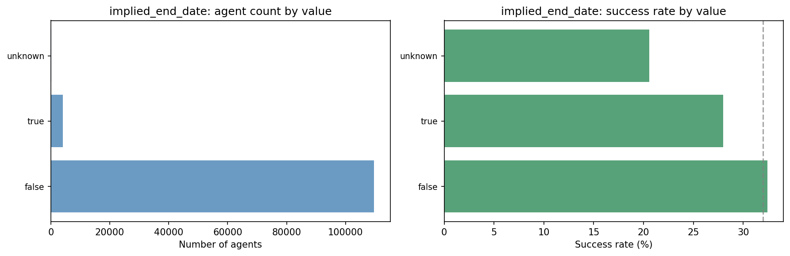
Inference * Most agents are false (no implied end date). Success rates are similar (0.28–0.32); implied_end_date has limited differentiation.
Direction (success vs fail)
Correlation with tools, triggers, templates
See table above.
Other insights
Implied end date is a minor lever; most impact comes from other dimensions (execution_dataset, functional_archetype, domain_industry_vertical).
Footnotes: Correlations are agent-level Pearson (|r| ≥ 0.05); primary trigger/template and avg tool usage per run. Correlation color code: Green = positive correlation with this dimension value; Red = negative correlation.